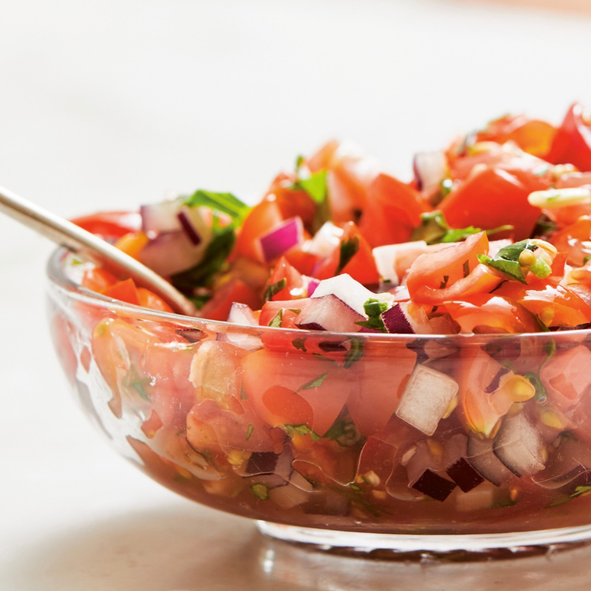
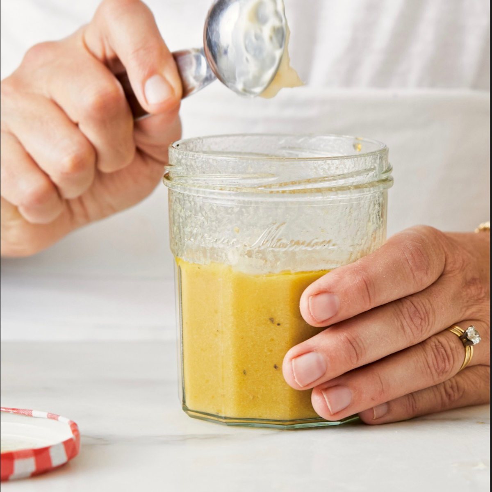

Kosher salt and freshly ground black-pepper to taste
1/4 cup chopped fresh dill
1 clove garlic, chopped
1 tbsp. fresh lemon juice
1/2 tsp. honey
Recipe:
In a blender or mini food processor, process the yogurt, olive oil, harissa, vinegar, salt, pepper, dill, garlic, lemon, juice, and honey, until the mixture is thick (like a creamy salad dressing)
Add 1 tbsp. of water at a time until you get your preferred consistency.
Salsa Fresca:
Ingredients:
2 1/2 cups finely diced fresh tomatoes
1/4 cup chopped fresh cilantro, leaves, and stems
1 small garlic clove, pressed or finely minced
2 tbsp. finely minced sweet white onion
1/2 small jalapeno pepper, stemmed, seeded, and ribs removed
1 tbsp. red wine vinegar
1 tbsp. extra-virgin olive oil
Kosher salt and freshly ground black pepper to taste
Dash of hot sauce
Recipe:
In a medium bowl, combine the tomatoes, cilantro, garlic, onion, jalapeno, vinegar, olive oil, salt, black pepper, and hot sauce.
Stir everything together and taste for heat.
Add a few more drops of hot sauce if desired.

All-Purpose Vinaigrette:

Ingredients:
1 tbsp. Dijon mustard
1/4 cup vinegar (e.g., red wine, white wine, or white balsamic vinegar)
1 tbsp. fresh lemon juice
1/2 tsp. sugar or honey
Kosher salt and freshly ground black pepper to taste